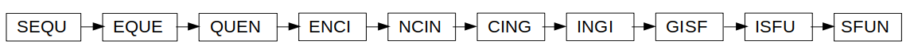
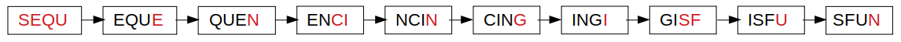
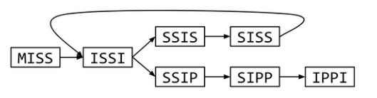

A 20,000 league view of Bioinformatics
Kelsey Florek, MPH, PhD 2019 AMD Symposium May 23, 2019
Slides available at:
www.k-florek.net/talks
https://staph-b.github.io/midwest-region/
Bioinformatics: An interdisciplinary field that develops methods and software tools for understanding biological data.
What does the data look like
@M03478:141:000000000-C5B4D:1:1101:25956:10945 1:N:0:1 TTCCGTATTCATGCAACCTATGATGAAAGTATTAGTCGGTTACTCAATGTATTTGAGCGC + ABBBBCFFFFFFGGGGGGGGGG5GHHHHHGGHHHHHHGGGGFHHHHHHHHHHHHHFGHGG
@M03478:141:000000000-C5B4D:1:1101:25956:10945 1:N:0:1 TTCCGTATTCATGCAACCTATGATGAAAGTATTAGTCGGTTACTCAATGTATTTGAGCGC + ABBBBCFFFFFFGGGGGGGGGG5GHHHHHGGHHHHHHGGGGFHHHHHHHHHHHHHFGHGG
- M03478 - the unique instrument name
- 141 - the run id
- 000000000-C5B4D - flowcell id
Phred Score
- 10: 1 in 10 90%
- 20: 1 in 100 99%
- 30: 1 in 1000 99.9%
- 40: 1 in 10,000 99.99%
- 50: 1 in 100,000 99.999%
- 60: 1 in 1,000,000 99.9999%
what can you do with fastq / read data
k-mers: all the possible substrings of length k
basic analysis pipeline
- quality trimming
- assembly
- de novo assembly
- reference mapping
- antibiotic resistance detection
- de novo assembly
- reference mapping
ensuring quality reads
@M03478:141:000000000-C5B4D:1:1101:25956:10945 1:N:0:1 TTCCGTATTCATGCAACCTATGATGAAAGTATTAGTCGGTTACTCAATGTATTTGAGCGC + ABBBBCFFFFFFGGGGGGGGGG5GHHHHHGGHHHHHHGGGGFHHHHHHHHHHHHHFGHGG
- remove sequencing adapters
- trim when quality drops
- specify a minimum length
- scan for contamination
basic analysis pipeline
quality trimming- assembly
- de novo assembly
- reference mapping
- antibiotic resistance detection
- de novo assembly
- reference mapping
de novo assembly: assembly of read data without the use of a reference sequence
de Brujin graph: a directed graph representing overlaps between sequences of symbols
de Brujin graphs
cingi sequen sfun encin cing isfu
all 4-mers: cing ingi sequ eque quen sfun enci ncin cing gisf isfu
unique 4-mers: cing ingi sequ eque quen sfun enci ncin gisf isfu
assembly graph:

sequencingisfun
difficult de Brujin graph
missis ssissi ssippi
all 4-mers: miss issi ssis ssis siss issi ssip sipp ippi
uniqe 4-mers: miss issi ssis siss ssip sipp ippi
assembly graph:
mississippi or mississississippi
choosing k
- low k
- more connections
- higher chance of repeats
- higher coverage
- high k
- less connections
- higher chance of resolving repeats
- lower coverage

storing genome assemblies (the .fasta file)
>A/Hong_Kong/4801/2014_NP gttaataatcactcactgagtgacatcaaagtcatggcgt cccaaggcaccaaacggtcttatgaacagatggaaactga tggagatcgccagaatgcaactgagattagggcatccgtc gggaagatgattgatggaattgggagattctacatccaaa
reference mapping: a method of mapping the reads to a reference sequence
storing read mapping (the .sam file)
- read name / reference name
- position read maps to on the reference sequence
- sequence read and quality information
- many others..
storing the read mappings in a binary format (the .bam file)
provides a faster access to data and tends to use less memory
compression
- gzip
- repetitions in the data are replaced by references to the data
- repetitions in the data are replaced by references to <7,8>
- replaces more frequent characters with variable length encoding
- T : 01010100 ----> T : 11
compression matters
- Uncompressed:
- E coli both set of reads ~900MB
- E coli sequencing run (16 isolates) ~20GB
- Compressed:
- E coli both set of reads ~200MB
- E coli sequencing run (16 isolates) ~4GB
moving data
data moves across the internet in 1,500 byte packets
- ftp
- http
- sftp
- https
basic analysis pipeline
quality trimming- assembly
de novo assemblyreference mapping
- antibiotic resistance detection
de novo assemblyreference mapping
using the data to find resistance mechanisms
- database
- multifasta
- SQL
- search for patterns
NCBI BLAST (basic local alignment search tool)
BLAST finds similar sequences by locating short matches between sequences
after the first match BLAST begins to make local alignments
location: 4377811 - 4378944
gene name: Escherichia_coli_ampC
coverage: 100
identity: 100
database: card
description: A class C ampC beta-lactamase (cephalosporinase) enzyme described in Escherichia coli shown clinically to confer resistance to penicillin-like and cephalosporin-class antibiotics.
review
- quality control / trimming of reads
- assembly
- de novo
- reference mapping
- AR detection using BLAST
review
- sequencing data storage
- data compression
- transferring data across networks
applied Linux virtual course
https://forms.gle/oKSB5KFKcv5DX4k57
Course Dates: June 10th - June 14th, 2019
Length: 2hr sessions Monday, Wednesday and Friday; Office hours on Tuesday and Thursday